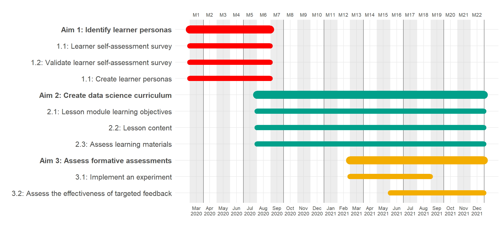

Prelim a la R01
Prelim a la NIH R01
1
Summary Statement
Specific Aims
2
Significance
3
Innovation
4
Approach
4.1
Human Subject Research
4.2
Introduction
4.3
Hypothesis
4.4
Experimental Design
Aim 1: Identify learner personas in the biomedical sciences by creating and validating learner self-assessment surveys.
Aim 2: Create an effective data science for biomedical science curriculum based on best education and pedagogy practices.
Aim 3: Assess the effectiveness of formative assessments in learning objectives.
5
Timeline
References
Published with bookdown
A Pedagogical Approach to Create and Assess Domain Specific Data Science Learning Materials in the Biomedical Sciences
Chapter 5
Timeline
